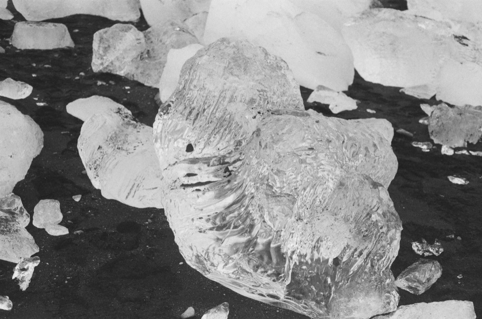
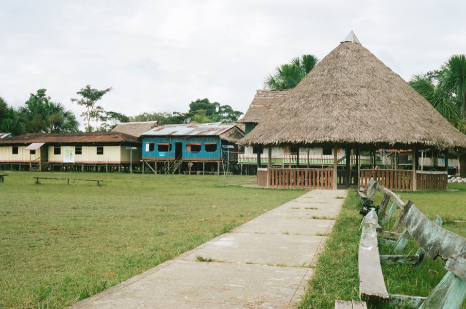
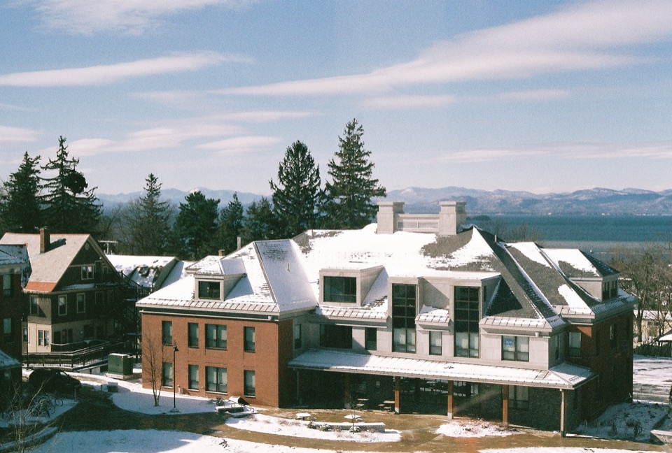
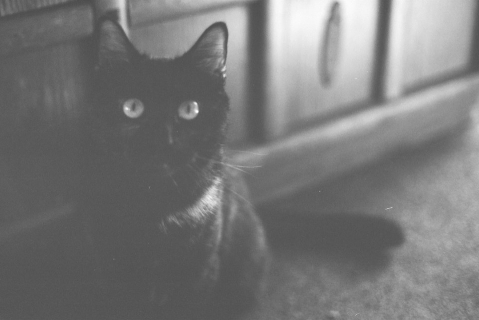

Film archive
Film photography.
A small portfolio for first impressions, followed by the broader archive for wandering. Mostly 35mm film, photographed with a Canon AE-1 and, more recently, a Nikon F3.
Selected edit
A few selected photographs.


The archive
Places, rolls, and the frames between.

Album 01 Iceland 48 frames · seven locations
Album 02 Peru 4 selected frames
Album 03 Burlington 2 selected frames
Album 04 At home 2 small observations